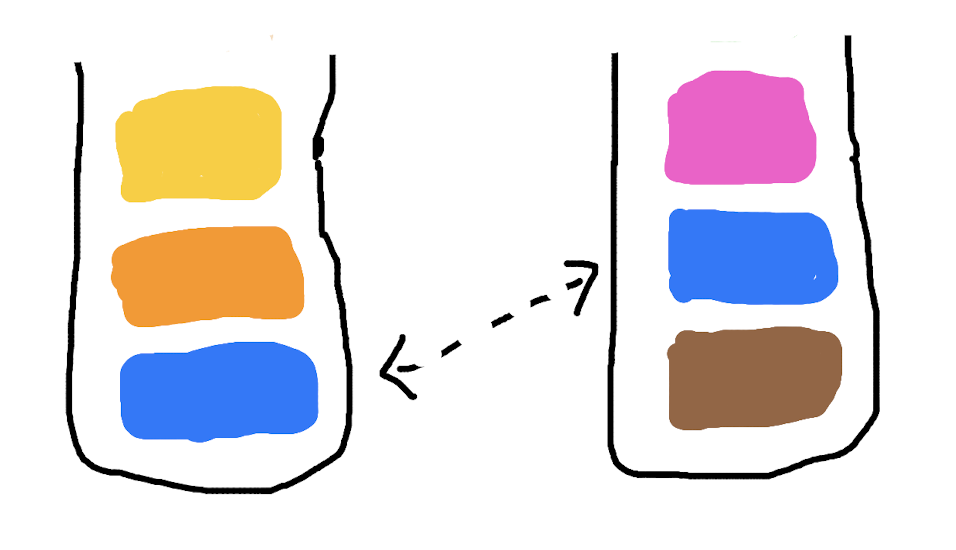
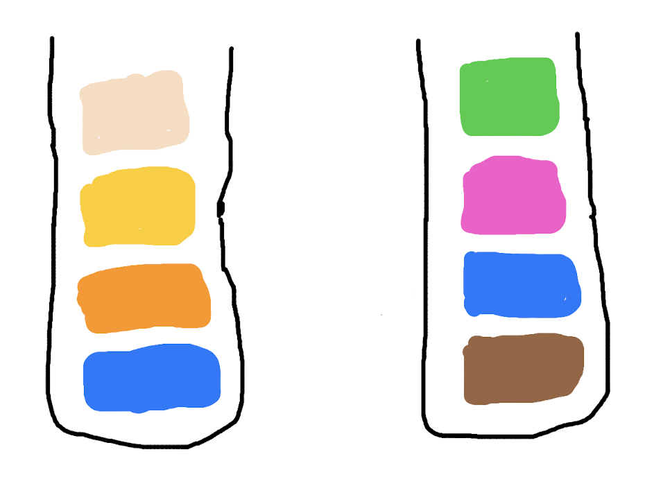
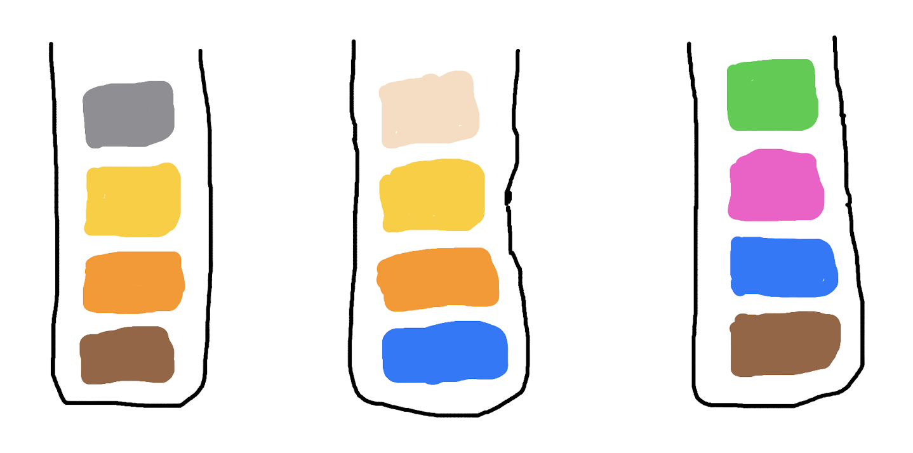
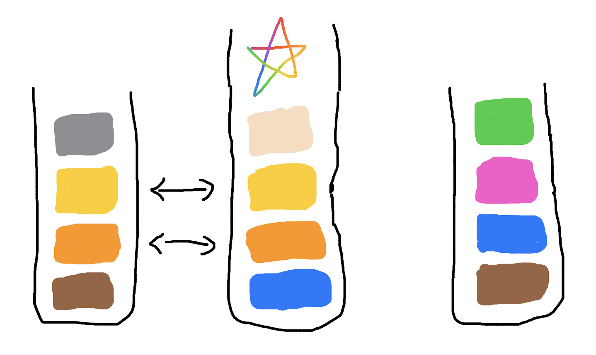
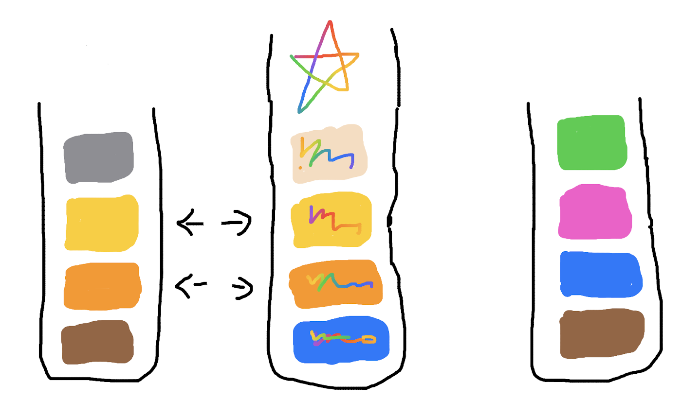
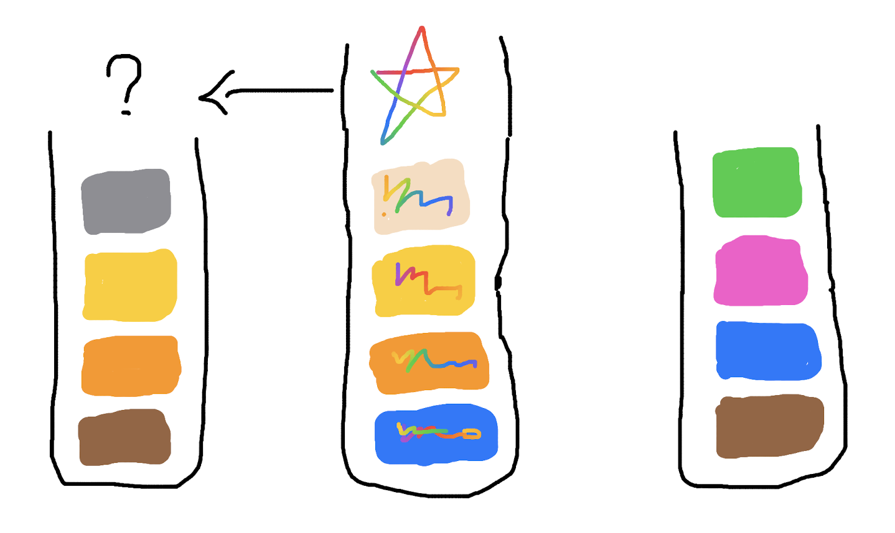
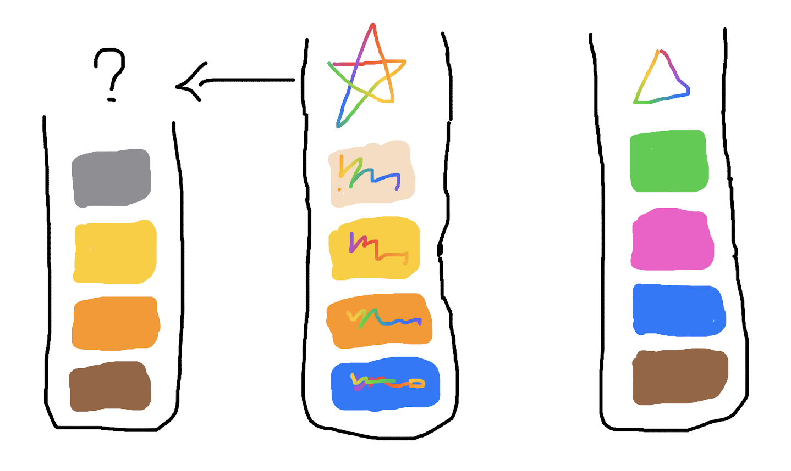
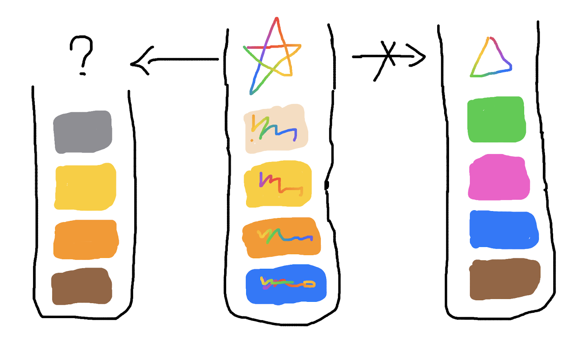
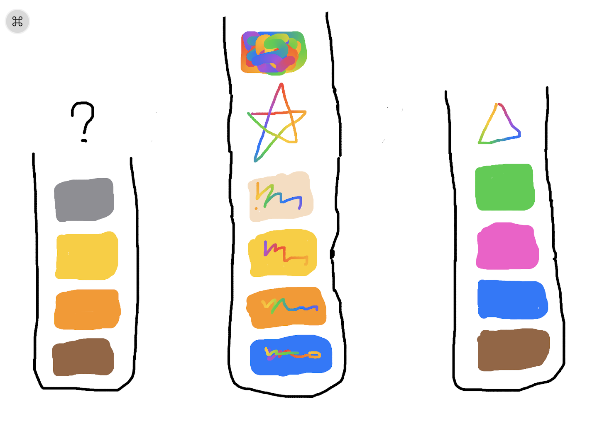
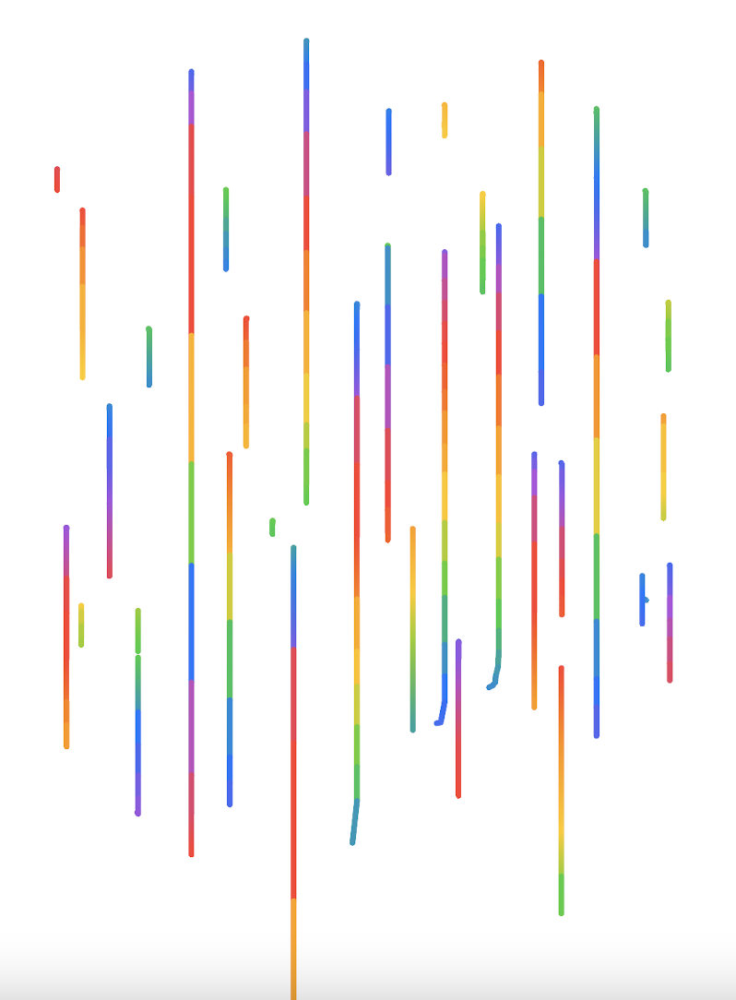

知识的诅咒
2021-11-24
一开始，每个人都是一个空的容器：

随着经历的增长，容器内增添新的内容：

并且会不断增加新的内容：

当两个容器相遇，容器内装着不同的内容：

两个容器会尽可能拿出内容相同的一面，产生关联，在某些问题上达成一致，并且形成更密切的关系：

随着各自内容的继续增长，它们相同的一面占比由 1/2 变为 1/3，它们之间的联系变弱了：
相同内容占比变为 1/4 的时候，它们不再继续有联系：
此时第三个容器出现了：
最左边和中间的容器，相同之处占比为 2/4 = 1/2，它们产生了联系：

随着时间的继续增加和内容的继续增长，中间的节点获得了一些特殊的独一无二的内容，这个独特的内容是一个容器区别于其他容器的关键，俗称独立思考能力：
这一部分特殊的内容不仅自己特殊，还会影响之前存在的已有的内容，将之前的内容变为更加丰富的、带有独立思考的内容：
由于特殊内容对之前内容产生了干扰，混杂在之前的内容中，之前内容相同的占比已经降低，最左边容器和中间容器的关系变弱了：
甚至再没有关联：

最左边的容器，始终没有获得那样特殊的内容：
直到有一天，最右边的节点获得了一些特殊的内容，只不过是三角形的：
中间的容器和右边的容器无法达成一致：
中间容器的内容没有停止增长，在有了特殊内容之后，再增添的内容也变成彩色了：

中间的容器和左右两边的节点，都没有联系了，也难以再产生联系：
中间的容器，只剩自己了，和一开始一样：

中间容器的内容继续增长着：

和其他容器一起，各自独立地继续累加内容：

林林总总，花花绿绿：
